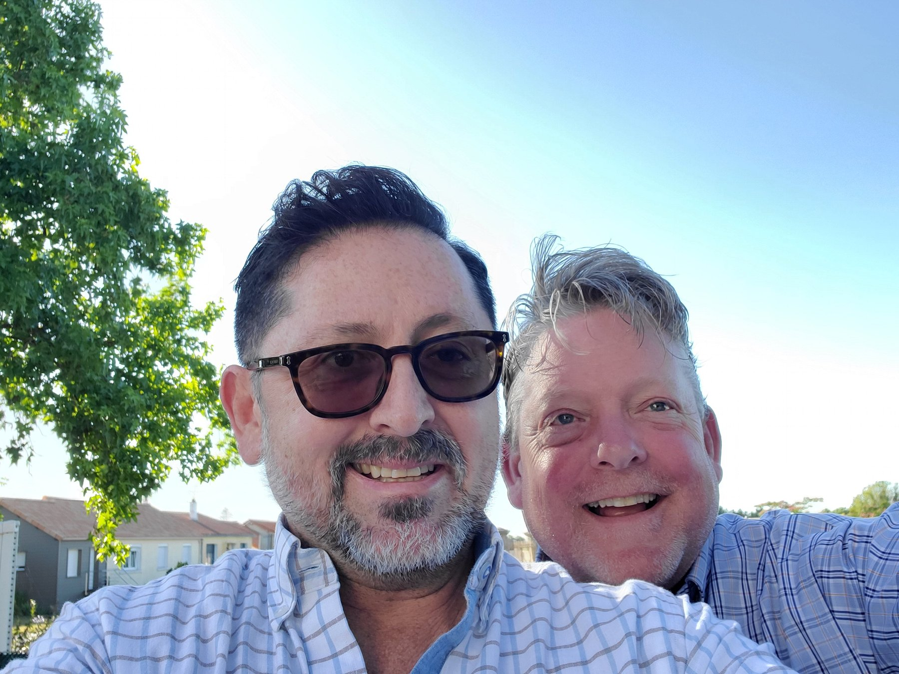
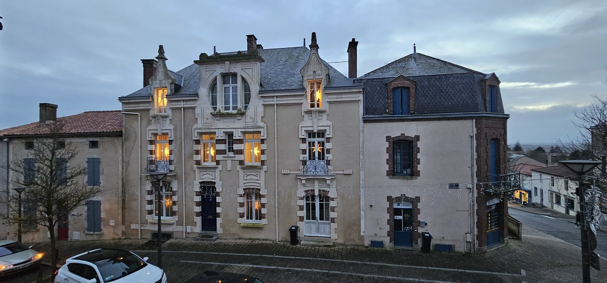
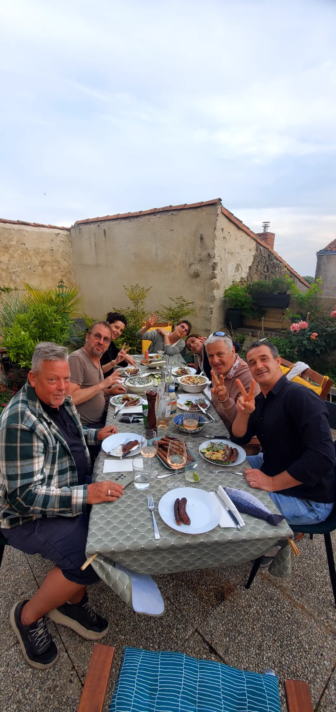
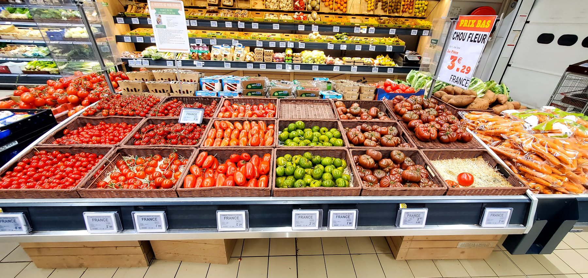
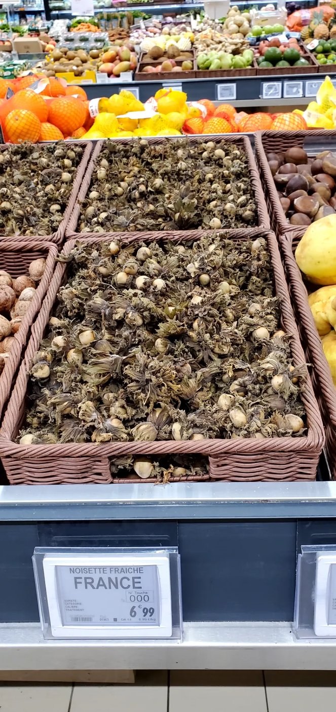
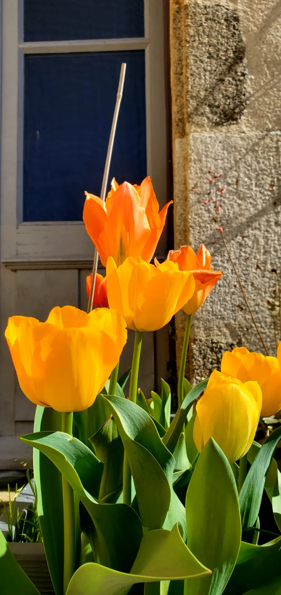
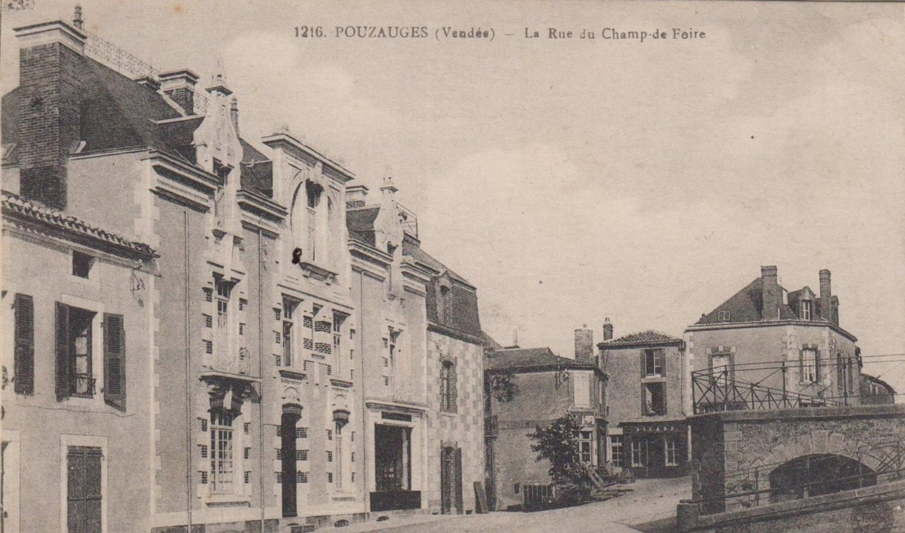
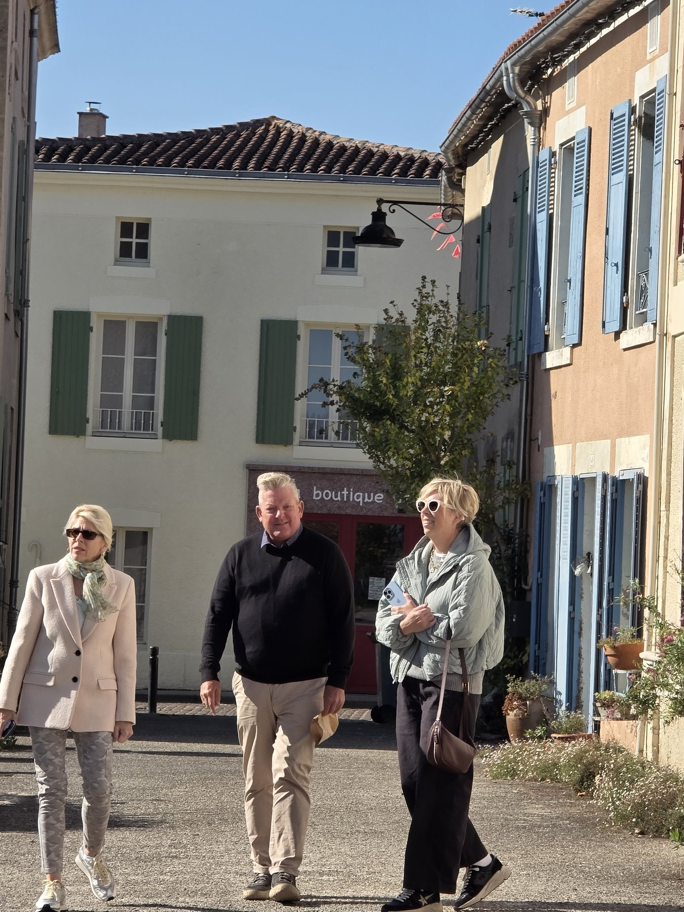

Two Americans. One French house. A lifetime of getting it right for people who notice.

Maison Farrow & Herrera was born from a simple observation: most American travelers love Europe but arrive without anyone in their corner who actually lives here, speaks the language, and knows which table to ask for.
We have been a couple, and business partners, for over twenty years. We met in hospitality, built an award-winning restaurant together in California, sold it to a private investor, and moved to France to live the life we'd been recommending to our guests for decades. Today, from our home in the Vendée, we plan European journeys for a small number of clients each season.
We work with couples, friends, and small groups who travel for the food, the wine, the art, and the people. We don't take on families with young children, school trips, or large packaged tours. We are openly gay, openly American, openly delighted to be of service.

Pouzauges, December. The lights are on. The wine is open. The phone is never far. This is where your trip begins.
Sixteen years as Executive Butler & Estate Manager for seven successive Consuls General of Japan in Seattle. Opening concierge team, Four Seasons Hotel & Private Residences. Personal assistant during WTO, G-7, and APEC summits — coordinating directly with the Secret Service, military, and local police.
Award-winning Executive Chef & Restaurateur. Co-founder of AJ's on the Green (multiple Best of the Desert honors). Private caterer at the Bohemian Grove for five seasons. Veteran of Whole Foods Market opening teams, specialty wine, and gourmet retail.
We don't recommend Europe from research. We send you to the markets where we shop, the table on our terrace, the forest path behind our home, the producers we know by name.






We don't move travelers through Europe. We hand them the keys to a continent.